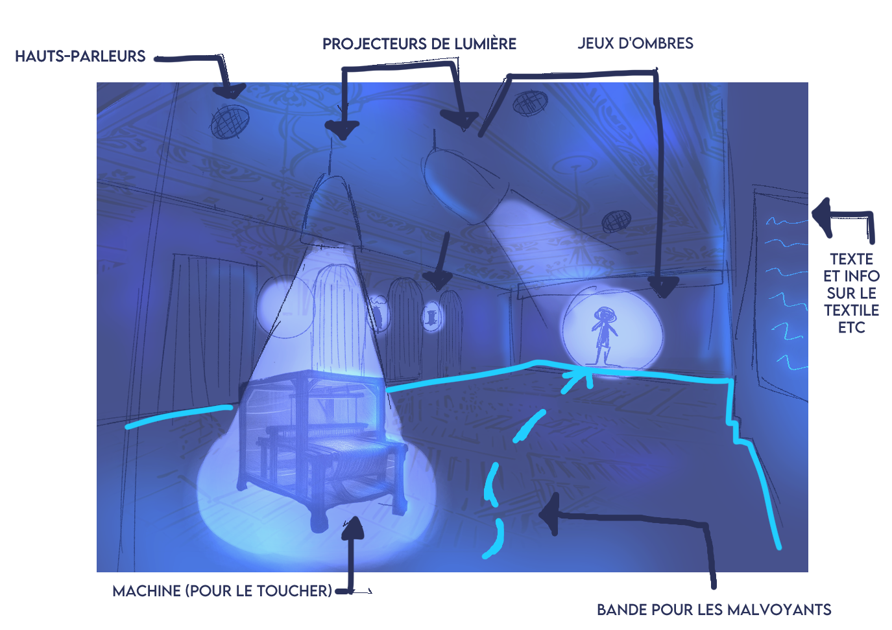
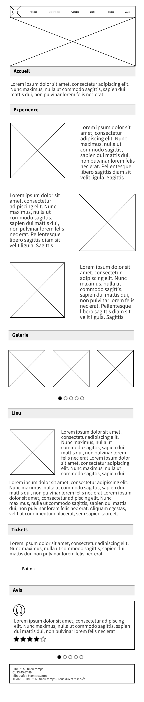

Context
As part of our SAE 202 project during my first year in MMI, we worked in a team to design an immersive journey through the Palais Consulaire of Elbeuf, a historic venue tied to the town's textile legacy. The objective was to highlight Elbeuf's industrial past while delivering a contemporary, sensory experience accessible to all audiences.
Process
Concept
The project is structured around a two-phase experience:
Immersive setup for Part 1:

Immersive setup for Part 2

My Role: Art Direction & Visual Identity
I was responsible for the project's visual identity guidelines, which I built around a central contrast: past versus present, legacy versus immersive design.
I selected an evocative color palette:
For typography, I paired ITC Avant Garde, a contemporary geometric sans-serif, with Minion Pro, a 17th-century inspired serif that echoes the period when Elbeuf was established as a royal drapery manufacture.
I also developed a cohesive visual toolkit featuring patterns tied to textiles (weave structures, dotted stitch lines, brick textures) and immersive lighting effects (spotlight shapes, soft halos).
Full Brand GuidelinesCommunication & UI Design
I created the website wireframes focusing on straightforward, intuitive navigation. The goal was to communicate the core concept right from the landing page, followed by clear sections: Gallery, About, and Booking.

For promotional outreach, we also produced an immersive promotional poster.

It highlights a female textile worker on the left alongside her cast shadow on the right, symbolizing the transition from human craftsmanship into historical memory.
Scenography & Video
I also contributed to the immersive video production, helping direct and stage specific sequences that relied on light and shadow interplay. This video was integrated directly into the physical scenography inside the historical showroom.
Key Takeaways
This project taught me how to develop a narrative-driven visual identity, craft clean user interfaces from wireframes, and collaborate across multidisciplinary teams on an immersive experience bridging scenography, marketing, and visual design.